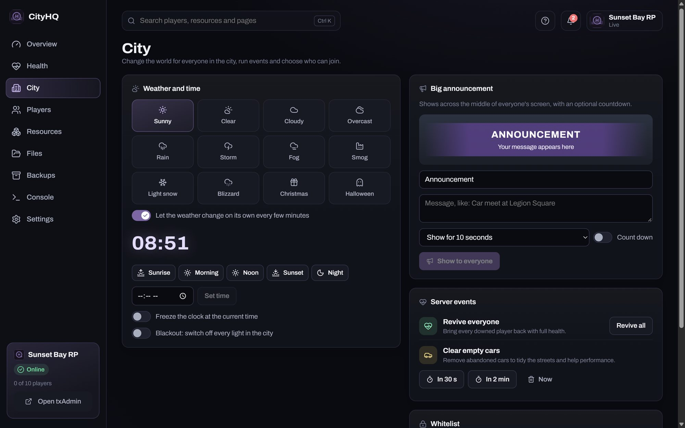

Problems, explained
Instead of red console text: what broke, which script caused it, and the steps to fix it, with links to that script's own docs.
CityHQ starts, watches, fixes and backs up your FiveM roleplay server. It explains problems in plain English, and it can undo every change it makes. No config files, no command line.
Works with the server you already have, or builds a new one for you.


What it does
txAdmin runs the game. CityHQ sits beside it and takes care of everything else: the health checks, scripts, files, backups, players and the city itself.
Instead of red console text: what broke, which script caused it, and the steps to fix it, with links to that script's own docs.
When a fix is safe, there's a Fix button. It says what it will do, asks first, and every change can be undone.
Finds what stops new servers: a PC that falls asleep, missing database tables, scripts started in the wrong order, and more.
Add a script from a file, a folder or a GitHub link. An install check says if it fits QBCore, what it needs and which tables it creates.
Change the weather and time, put an announcement across everyone's screen, revive everyone, clear empty cars and choose who can join.
Heal, revive, teleport, give items or money, set jobs and gangs, message, kick and ban, without typing commands.
A full backup every night, and a database backup before any SQL file runs. Restore one from a list of dates.
Scan a QR code and the same dashboard works from your phone on your home Wi-Fi. It isn't reachable from the internet.
If the server crashes, CityHQ starts it again and tells you why. It keeps the PC awake while the server runs, and updates itself with one click.
Problems
CityHQ reads the server's console for you and turns errors into a short list, most serious first.

Health
New servers stall for the same reasons. Health checks for them, and where a fix is safe there's a button for it.

Scripts
Every script gets a switch to start with the server and an install check. Settings files open as simple forms, so you don't hunt through code.

City
Set the weather and time for everyone, put a big announcement on every screen with a countdown, and run server events with one button.

Get started
No installer and no account. CityHQ finds your server by itself, or builds a new one in a folder you choose.
Get CityHQ-windows.zip. Right-click it, choose Properties, tick Unblock, then Extract All.
Open the CityHQ folder and double-click CityHQ. The Welcome screen asks one question: do you already have a server?
Yes: it finds your server, ports and database and shows what's missing. No: it sets up FiveM's server and a database, then walks you through txAdmin.
Windows may say it protected your PC. CityHQ isn't code-signed yet, so choose More info, then Run anyway. Smart App Control must be off, because it also blocks one of FiveM's own files.
Safe by design
Owners trust CityHQ because nothing happens behind their back, and almost everything can be put back.
Every change CityHQ makes is listed under What changed, with an Undo button.
Fixes, restarts and installs say what they'll do before they do it.
No account and no cloud. License keys and passwords are hidden everywhere in the app.
The code is public on GitHub, and downloads are checked against their published checksums.
FAQ
Yes, free to use, including on servers that take donations. The code is source-available under the PolyForm Shield license: you can read and change it, but not use it to make a competing product.
No. txAdmin still runs the game, and CityHQ works alongside it: it starts txAdmin, reads the server's files and console, and adds a small helper script so it can talk to the game. If you close CityHQ, the server keeps running.
Most likely. Choose "I already have a server" on the Welcome screen and CityHQ finds FXServer, txAdmin's data, the ports and your database, including XAMPP's MySQL. It lists anything missing before you connect. It adds its settings file and small helper script to your server folder, and moves nothing.
CityHQ is built and tested for QBCore. Other frameworks aren't supported yet; support for more is planned.
CityHQ runs on the Windows PC or Windows server where FXServer runs, so a rented Windows VPS you can log in to works. Game hosts that only give you a web panel, and Linux servers, aren't supported yet.
CityHQ isn't code-signed yet, so Windows doesn't recognize the publisher. Choose More info, then Run anyway. The download is built on GitHub from the public code, and its checksum is published with every release.
No. Everything stays on your PC. The only thing it contacts is GitHub, to check for a newer version, and you can turn that off in Settings. Phone access stays on your home network and needs a QR code or passcode.
From version 1.2.0 on, CityHQ checks for new versions every few hours and shows what's new. Press Update now and it installs the update and opens again in under a minute, while your server keeps running. If an update won't open, the old version is put back.
Use Report a problem under Settings, or on the Welcome screen. It writes the report for you, takes out keys, passwords, player IDs and IP addresses, and lets you check it before opening it on GitHub.
Free for Windows 10 and 11. Works with the server you already have.